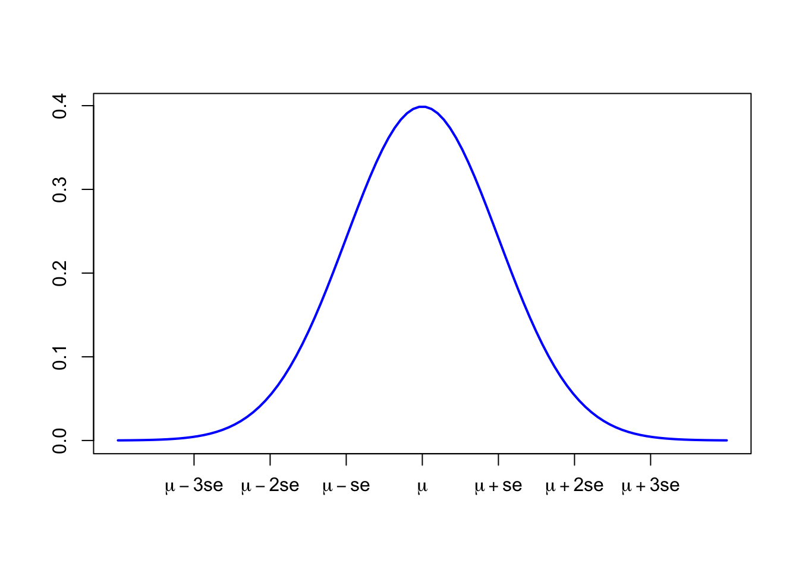
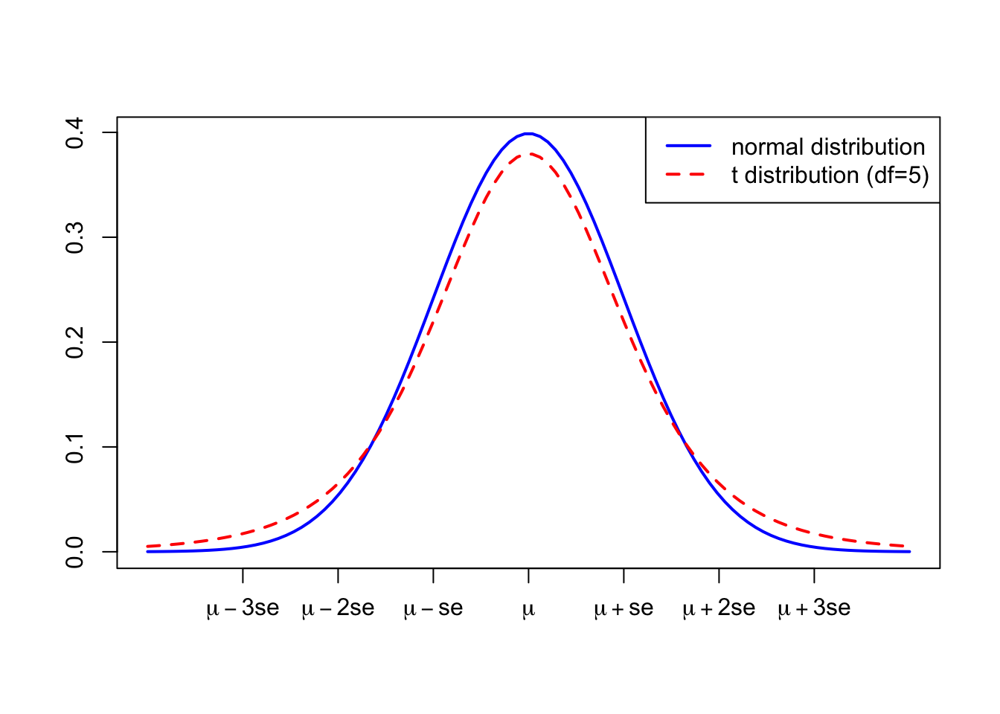

7 標準誤差と区間推定
7.1 標本統計量と母数
社会調査において、無作為抽出（ランダムサンプリング）がすぐれているとされる所以は、無作為抽出によって得られた標本である場合に、真の値からの”ズレ”を、確率論によって評価することができるためである。真の値と、標本から得られた統計量とのズレを評価することを、統計的推測と呼ぶ。統計的推測には、推定と検定のふたつがあり，推定には、点推定と区間推定がある。本章では特に、区間推定について扱いたい。
例えば、ある母集団の平均年収を知りたいとする。このとき、実際の標本調査で知ることができるものは、調査対象者たちの平均年収である。しかし、実際に私たちが知りたい統計量は、調査対象者の平均年収ではなく、母集団の平均年収である。このとき、調査対象者の平均年収など、標本から得られる統計量を、標本統計量と呼ぶ。特に、標本から得られる平均を、標本平均と呼ぶ。一方で、母集団における、私たちが本当に知りたい統計量のことを、母数、母集団の平均のことを、母平均と呼ぶ。つまり、私たちが平均年収を調査した場合、実際に調査からわかるのは、標本平均であるが、本当に知りたい値は、母平均であるといえよう。
7.2 標本抽出分布
社会調査を複数回行えば、自ずと得られる標本統計量は異なってくる。例えば、何回も社会調査を実施して平均年収を調べると、それらの調査から得られる標本平均には、ばらつきが生じる。
調査によって標本統計量が異なることは、よく起こる。たとえば、内閣支持率に関する調査は、調査によって一致することなどほぼない。もちろん、内閣支持率の調査を行なっている新聞社・メディアなどの調査方法による違いも含まれる。しかし、仮に同一の調査方法であったとしても、調査によって得られる標本統計量は基本一致しない。
仮に、ある母集団に対する標本調査を何回も繰り返し行うとする。そのような繰り返し実施される各調査において標本統計量をその都度計算すると、標本統計量は、下図のような正規分布のように分布することがわかっている。この標本統計量の分布は、十分なサンプルサイズであれば、母平均を単峰とする正規分布となる。そのため、母平均と標本平均との間の誤差は、期待値0の正規分布となり、このことを中心極限定理とよぶ。このように、ある母集団から無作為に抽出した場合に、標本から計算される標本統計量が従う分布のことを、標本分布と呼ぶ。
このとき、標本分布の最も高い箇所（中央）は、母数（母平均や母比率など）に一致することが知られている。さらに、この標本分布のちらばりを示す標準偏差を、標準誤差（standard error (se)）と呼ぶ。このグラフのうち、\(\mu-se\)から\(\mu+se\)までで、全体のおよそ70%を、\(\mu-2se\)から\(\mu+2se\)までで、全体のおよそ95%を占める。ふつうは、社会調査は1度しか実施しない。そのため、標本統計量は1つしか計算されない。しかし、以上の標本分布の特徴を踏まえれば、母数は95%程度の確率で、標本統計量から\(\pm2se\)の範囲に含まれることはわかる。つまり、標本統計量\(\pm2se\)程度の誤差を考えておけば、おおよそ母数を外すことなく”見積もる”ことができる。
7.3 標準誤差
標準誤差は，具体的には以下のようにして求めることができる。ここで、\(n\)は標本の大きさ、\(\sigma\)は母集団における標準偏差を意味する。
\[se = \frac{\sigma}{\sqrt{n}}\]
この式を見てみると、分子の母標準偏差\(\sigma\)が大きい場合に、標準誤差\(se\)も大きくなる一方で、標本の大きさ（数）が大きくなれば、標準誤差\(se\)も小さくなる。つまり、標本のサイズを大きくすれば、標準誤差は小さくすることができることから、簡単に言えば精度の高い推定ができるわけである。
先ほど、母平均から\(\pm2se\)（具体的には、\(\pm1.96se\)）の範囲に、標本平均が含まれる確率がおよそ95%になると示した。つまり、以下の範囲に、標本平均\(m\)は95%の確率で含まれるはずである。
\[\mu - 1.96 \frac{\sigma}{\sqrt{n}} < m < \mu + 1.96 \frac{\sigma}{\sqrt{n}}\]
この式を、簡単に式変形させると、
\[m - 1.96 \frac{\sigma}{\sqrt{n}} < \mu < m + 1.96 \frac{\sigma}{\sqrt{n}}\] 上式では、母標準偏差を使用しているが、母集団の標準偏差は知りようがないため、標本標準偏差から推測する。Rで標準誤差を計算する場合には、以下のように実行すれば良い。以下は、例えば年収の標準誤差の計算方法である。
sd <- sd(data4$income, na.rm = TRUE) # まず、標本標準偏差を計算し、sdに格納
sd[1] 188.5712n <- sum(!is.na(data4$income)) # サンプルサイズを、nに格納
n[1] 812se <- sd/sqrt(n) # 標準誤差を計算
se[1] 6.6175527.4 母平均の区間推定
母分散が未知の場合でも、標本から計算される標本不偏分散\(\hat{\sigma^2}\)を計算すれば、標準誤差の推定値を得ることができる。つまり、先ほどの式は、以下のように書き換えられる。
\[m - 1.96 \frac{\hat{\sigma}}{\sqrt{n}} < \mu < m + 1.96 \frac{\hat{\sigma}}{\sqrt{n}}\]
標本から計算される不偏分散を使用する場合、これまでに示してきた正規分布ではなく、t分布を用いる必要がある。t分布は、標準正規分布（平均が0、分散が1の正規分布）によく似た形をしており、少しだけ頂点が低くて裾が厚い。

標準誤差の計算において、未知の母分散を不偏分散から推定した場合には、標準化した変数がt分布に従うことを利用する。とはいえ、分析ケースが大きい場合には、標準正規分布を使用するかt分布を使用するかは、そこまで問題にならない場合が多い。
これまでに示したように、標本統計量の確からしさは，標準誤差の計算によって明らかにすることができる。このような標本統計量の特徴を利用することで、「100回調査をやったら、p回は母平均がその範囲に含まれる」というような区間を計算することができる。このような区間を、信頼区間と呼ぶ。多くの場合、90%信頼区間、95%信頼区間、99%信頼区間などが使用される。このような90%、95%、99%といった確率は、信頼水準と呼ばれる。
なお、母比率の区間推定は、以下の式から計算される。なお、\(\pi\)は母比率を、\(p\)は標本比率を意味する。
\[p - 1.96 \sqrt{\frac{p(1-p)}{n}} < \pi < p + 1.96 \sqrt{\frac{p(1-p)}{n}}\]
Rでは、以下のようにして信頼区間を計算することができる。例えば、平均年収の信頼区間を知りたい場合。
t.test(data4$income)
One Sample t-test
data: data4$income
t = 38.962, df = 811, p-value < 2.2e-16
alternative hypothesis: true mean is not equal to 0
95 percent confidence interval:
244.8460 270.8251
sample estimates:
mean of x
257.8356 これは、後ほど説明する、統計的仮説検定（t検定）を実行するコマンドである。信頼区間については、「95 percent confidence interval」の箇所に結果が出力されている。ちなみに、「mean of x」が標本平均である。母平均は、244.8460〜270.8251の間に、95%の確率で含まれるわけである。
Noteグループ・ワーク
階層帰属意識の母平均の区間推定を行い、その結果を解釈してみよう。